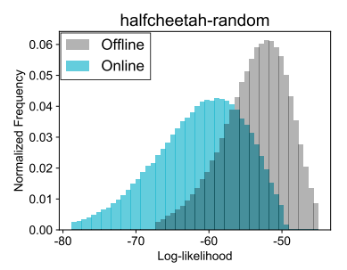
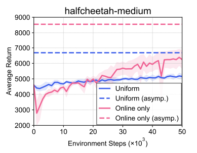
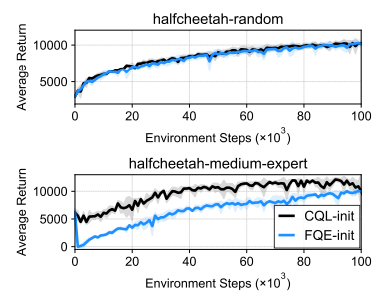
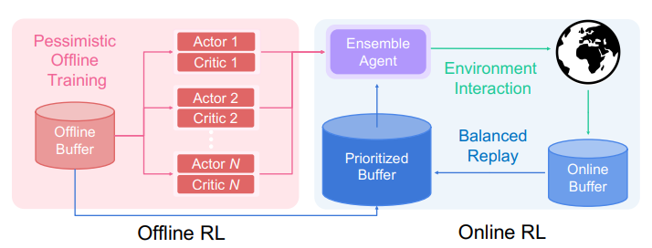

- 저자: Seunghyun Lee, Younggyo Seo, Kimin Lee, Pieter Abbeel, Jinwoo Shin
- 발표: CoRL 2021
- 논문
- OpenReview
- Code (PyTorch)
TL;DR
Offline RL에서 아무리 좋은 policy를 학습했다 하더라도, online RL을 통한 fine-tune을 수행하게 되면 state-action distribution shift로 인해서 bootstrap error가 커지는 현상이 발생하게 된다. 이를 방지하기 위해서 online에서 얻은 sample에 대해서 우선순위를 부여하면서, offline dataset에서 뽑은 near-on-policy sample을 사용하도록 하는 balanced replay 구조를 제안했다. 추가로 offline상에서 여러개의 Q-function을 pessimistic하게 학습하고 이에 대한 ensemble을 취해서, 초기 학습단계에서 state에 대한 unfamiliar action을 다루는데 overoptimism이 발생하는 것을 방지했다.
내용 정리
Offline RL Agent Fine-tuning
이 챕터에서는 Offline RL에서 학습된 Agent를 Online에서 Fine-tuning했을 때 distribution shift에 의해서 성능 저하가 발생하고, 왜 해당 문제가 발생하는지에 대해서 설명했다. 또한 논문에서 제안하는 아이디어의 핵심적인 요소인 sample selection과 Offline Q-function을 선택하는 방법에 대해서 소개했다.
Distribution Shift in Offline-to-Online RL
Offline data과 Online data을 섞게 되면, offline buffer \(\cal{B}^{\text{off}}\) 에서 뽑은 Data인 \(d^{\text{off}}(s, a)\) 와 online buffer \(\cal{B}^{\text{on}}\) 에서 뽑은 Data인 \(d^{\text{on}}(s, a)\) 간의 distribution shift는 존재한다. 논문에서는 D4RL 환경 중 하나인 halfcheetah-random dataset의 state-action pair를 Variational AutoEncoder를 통해서 재생성하고, 여기에서 CQL agent로 돌렸을 때 나온 online sample과 offline sample을 비교했다.

Figure 1 에서 보여지는 것처럼 offline에서의 state-action distribution과 online에서의 state-action distribution 간의 shift가 발생하는 것을 확인할 수 있다. 이렇게 Distribution shift가 발생하게 되면, agent가 만약 unseen state-action을 마주치게 될 경우, 이 때 참고를 하게될 Q-value (이때 값은 bootstrapping에 사용될 값을 위해서 추정된 값이 된다.)가 매우 부정확하게 된다. 이렇게 부정확한 값을 바탕으로 Policy Iteration을 수행하게 되면 Offline RL에서 아무리 좋은 정책을 얻어도 망가지는 현상이 발생한다. 특히 Offline RL agent가 behavior policy, 즉 dataset을 쌓을 때의 policy보다 성능이 좋은 경우에는 Distribution shift에 의한 성능 저하가 심하게 나타난다. 그리고 offline dataset이 어느 한점이 치중해 있는, 소위 narrow distributed 한 case에서는 (보통 single policy로 학습한 경우) 실제 online RL을 수행할 때 기존의 distribution에서 이탈하는 경향이 더 심하게 나타난다.
Sample Selection
Online dataset은 fine-tune에 필요한 요소이긴하지만 distribution shift 문제로 인해서 잠재적으로 위험한 Out-of-Distribution (OoD) sample이기도 하다. 반면 Offline dataset은 in-distribution 이긴 하지만, fine-tune에 영향을 못 미치거나 느리게 영향을 미친다. 이를 실험적으로 보여주기 위해서 CQL로 학습한 offline agent를 SAC로 fine-tune을 수행했을 때, online dataset을 사용하지 않은 경우와 사용한 경우를 비교했다.

Asymptotic하게 얻을 수 있는 Average return 자체는 Online data만을 사용했을 때가 Uniform, 즉 offline data와 online data를 같이 사용한 경우에 비해서보다 높았지만, Figure 2 에서 학습 초반부를 보면 Average return이 뚝 떨어지는 현상이 나타난다. 이와 같이 online sample만 가지고 fine-tuning하는 것은 unstable하며, 이는 online data 내에 존재하는 OoD sample이 bootstrap error를 야기하기 때문이다.
Offline data와 online data를 같이 사용하는 경우에도 offline data와 online data간의 비율 문제로 인해서 value propagation이 느리게 나타나는 문제는 있지만, 그래도 online data만 썼을 때에 비하면 학습 초반부에는 어느 정도의 stability를 확보할 수 있다. 이때문에 논문의 아이디어도 offline data와 online data를 같이 사용하는 balanced replay에 대한 아이디어를 제안하게 되었고, 이는 유용하지만 잠재적으로 위험한 online sample과 안정적이긴 하지만 fine-tune이 느린 offline sample간의 trade-off를 잘 조절하는 목적을 가지고 있다.
Choice of Offline Q-function
Offline RL에서 발생하는 distribution shift 문제를 해결하는데, 대부분의 방법들은 CQL에서 제안하는 것처럼 OoD action에 대해서 최대한 conservative함을 유지하는 것인데, 이 논문에서도 역시 동일하게 pessimistically trained Q-function을 사용했다. 이를 보여주기 위한 실험으로 pessimistically trained Q-function을 사용했을 때와, Regularization이 적용되지 않은 Q-function \((\approx \text{FQE})\) 을 활용하여 online fine-tune한 결과를 비교했다.

Figure 3 의 첫번째 그래프는 halfcheetah-random data에 대한 fine-tune에 대한 결과인데, 이 그래프에서는 두 방법론 모두 비슷한 fine-tune 성능을 보여주고 있다. 문제는 두번째 그래프인데, halfcheetah-medium, 즉 expert data와 random data가 반반씩 섞인 데이터를 가지고 학습한 모델에서 fine-tune을 수행하면 Regularization 이 적용되지 않은 FQE-init의 초반부 성능이 확 저하가 되는 것을 확인할 수 있다. 이는 FQE-init이 novel state에 대한 OoD action에 대해서 overoptimistic한 값을 가지고 있기 때문에 발생하는 문제이다. 다르게 표현하면 policy가 안전하면서 이미 학습때 본 trajectory가 아닌 잠재적으로 나쁜 action 을 더 선호하는 경향이 나오는 것이다. 이런 이유로 인해서 논문에서 제안하고자 했던 두번째 아이디어는 처음에는 offline을 통해서 pessimistic Q function을 학습하고, fine-tune 단계에서 balanced replay를 통해 offline data와 online data를 섞어주면서 점진적으로 pessimism을 줄여나가는 것이다. 여기에 덧붙여서 한 agent에 의한 pessimism을 방지하기 위해서, 여러개의 agent를 동시에 학습한 후 각 agent의 Q-function에 대한 ensemble을 취하는 방식을 사용했다.
Method
결과적으로 논문에서 제안하는 방식은 offline data와 online data를 같이 사용하는 balanced replay와 pessimistic Q-function을 사용하는 ensemble을 취하는 것이고, 구조는 Figure 4 과 같다.

Balanced Experience Replay
물론 balanced replay 내에서 sampling을 하는데 있어 priority가 존재하고, 이를 토대로 sampling하는 형태 자체는 Prioritized Experience Replay (PER)에서 소개하는 방식과 비슷하다. 다만 TD-error를 기반으로 priority를 매기는 PER과는 다르게 Balanced Replay에서는 online-ness 라는 것을 계산해서 priority를 계산한다. 이 지수의 목적은 framework내 online RL에 나와있는 것처럼 online data를 우선적으로 사용하면서도, near-on-policy인 offline data를 fine-tune에 활용하고자 하는 것이다. 조금 더 자세하게 설명하자면, offline data와 online data가 섞인 buffer에서 transition \((s, a, s')\)을 sampling을 하되, 이 때 sampling 하는 확률을 일종의 density ratio \(w(s, a) := d^{\text{on}}(s, a) / d^{\text{off}}(s, a)\) 에 비례하게 정하자는 것이다. 물론 이 density ratio가 1에 가깝다는 것은 online data의 distribution과 offline data의 distribution이 동일하다는 것을 의미하고, 이 비율대로 뽑게 되면 offline buffer \(\cal{B}^{\text{off}}\) 에 속하는 데이터 중 최대한 near-on-policy에 해당하는 sample을 얻을 수 있게 되는 것이다. 하지만 위의 \(w(s, a)\) 를 계산하는데 필요한 정보인 \(d^{\text{on}}(s, a)\) 와 \(d^{\text{off}}(s, a)\) 는 실제로는 구하기 어려운 값이기 때문에, 논문에서는 \(\psi\) 를 weight으로 가지는 network으로 학습된 \(w_{\psi}(s, a)\)로 density ratio를 계산하는 방법을 취했다.
Pessimistic Q-Ensemble
Figure 4 에 소개되어 있는 것처럼, 이 논문에서 제안하는 모델은 multiple agent가 pessimistic 하게 (\(\approx \text{CQL}\)) 학습한 Q-function 들을 ensemble하는 형태를 가지고 있고, 이는 offline rl에서 발생하는 distribution shift 문제를 대응하기 위함이라고 되어 있다. 구체적으로는 \(N\) 개의 CQL agent를 offline data로 학습시켜서 \(\{ Q_{\theta_i}, \pi_{\phi_i}\}^N_{i=1}\) 를 얻은 후, 아래와 같은 Q-function과 policy을 가지는 agent들의 ensemble 모델을 만든다.
\[ Q_{\theta} := \frac{1}{N} \sum^N_{i=1} Q_{\theta_i}, \quad \pi_{\phi}(\cdot | s) = \cal{N}(\frac{1}{N} \sum^N_{i=1} \mu_{\phi_i}(s), \frac{1}{N} \sum^N_{i=1} (\sigma^2_{\phi_i}(s) + \mu^2_{\phi_i}(s)) - \mu^2_{\phi}(s)) \]
참고로 각 network의 parameter인 \(\theta\) 와 \(\phi\) 는 fine-tuning 단계에서 업데이트되는데, 이렇게 되면 초기 fine-tuning 단계에서 나타는 unstable한 현상, 즉 해당 state에 취해지는 unseen action에 대한 pessimism을 유지할 수 있게 된다. (아무래도 한개일때보다는 여러개의 ensemble model이 조금더 안정된 형태가 아닐까.. 물론 그만큼 resource를 잡아먹겠지만….)